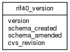

| Table: rif40.rif40_version | |||
| RIF version | |||
| Size: medium, Select frequency: medium, Update frequency: medium | |||
| Columns | |||
| Name | Type | Constraints | Description |
| version | VARCHAR (50) | NOT NULL | Version. Used for change control to ensure front end matches database. |
| schema_created | TIMESTAMP | Date schema created | |
| schema_amended | TIMESTAMP | Date schema amended | |
| cvs_revision | VARCHAR (50) | NOT NULL | CVS revison control information for last amendment |
| Grants | |||
| Role | Actions | ||
| rif_manager | update | ||
| rif40 | select, references, insert, delete, update | ||
| PUBLIC | select | ||
